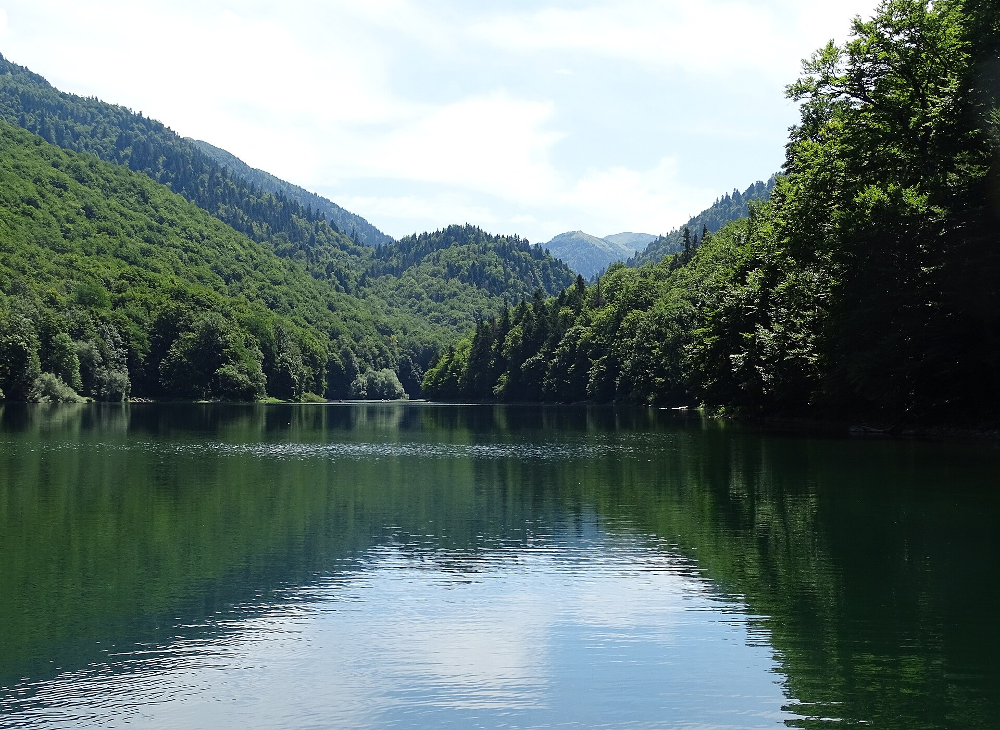

Field Notes
Twenty-four places across the five candidate countries, organised by country — each country name opens its own page with all its places — with every pinned spot from Nicole's map list.


Montenegro
 05
05
Budva Riviera & Sveti Stefan
Read → 06
06
Kotor & the Bay
Read → 07
07
Lovćen National Park
Read →
08Durmitor & Žabljak
Read → 09
09